概率论如何稳定深度神经网络的训练
导言
《人工智能导论》课程中的一次编程作业中，为了让训练更稳定，我希望能够恰当完成神经网络参数的初始化。查阅资料得知，不同的初始化方式适用于不同的激活函数。例如，Xavier 初始化适用于 Tanh/Sigmoid 激活函数，Kaiming 初始化适用于 ReLU 及其各种变体，而对于传统的 RNN，正交初始化则是常用的选择。尽管参数初始化不再是现代的大语言模型的研究热点, 在 GPT-2 技术报告之后, 大模型的技术报告中鲜有对参数初始化的提及, 但并不妨碍它作为大模型领域一个非常有趣的子课题。
研究参数初始化的特点是，输入可以被建模为服从标准正态分布的向量，而 MLP 的输出关于每一层的参数是线性的, 梯度可以很好地用矩阵表示。恰逢《人工智能导论》期末考察了反向传播，因此我在这里认真学习一下。
在本篇文章中, 将重点关注 Xavier、Kaiming、Saxe 和 muP 四篇论文，梳理初始化方法所追求的目标、设立的前提和假设、推导过程与最终结论。这四篇文章的优化目标层层深入, 从线性神经网络的方差稳定性, 到 ReLU 等非对称激活函数下的方差稳定性, 再到深层神经网络矩阵乘积的奇异值稳定性, 到最后宽度极限下的学习率与步长稳定性。其中，正交初始化这篇严谨从训练动力学的角度出发，验证了正交矩阵保奇异值的有效性与重要性，是一篇较为独特的工作。总体而言，主线围绕，通过初始化参数的设计提高模型训练稳定性而展开。
深度学习是一门兼具理论与实践的学科, 因此在理论推导之外，我将动手进行论文实验的复现与分析，并比较在不同场景下不同方法的能力和局限性, 讨论概率论在深度学习上的应用.
数学前提
由于在推导论文公式时, 需要反向计算参数梯度. 二维矩阵梯度的计算较为复杂, 而当多层神经网络时更为复杂. 在这个过程中, 我简要将自己学到的知识总结如下:
首先, 对 $f = Wx$, 假设已有 $\frac{\partial L}{\partial f} = \delta$, 其中 $L$ 是标量, $f$ 是隐藏层输出. 设 $x \in \mathbf{R^{N_1}}$, $W \in \mathbf{R^{N_2 \times N_1}}$, 则, $f \in \mathbf{R^{N_2}}$
注意中间值 $\frac{\partial f}{\partial W}$ 是不能直接用矩阵表示的, 因为它是 $N_2 \times (N_2 \times N_1)$ 的张量. 不可以直接类似多元微积分链式法则进行累乘. 但有
$$\frac{\partial{L}}{\partial x} = W^T\delta , \quad \frac{\partial{L}}{\partial W} = \delta x^T $$
具体证明可以通过自变量的逐元素导数计算.
而对于类似 $L = ||f-\hat{y}||^2$ 的矩阵函数, 可以直接有
$$\frac{\partial{L}}{\partial{f}} = 2(f - \hat y) $$
这与多元微积分中的复合函数求偏导一致。
基于以上知识，便可以进行下面的分析了。
如何初始化神经网络
为什么要研究如何初始神经网络的参数？神经网络的训练是一个最优化问题，而优化目标所在的空间有大量的鞍点、平坦区域和陡峭区域，如果初始参数选择不当，前向传播和反向传播都可能出现数值衰减或爆炸的情况。为了保证开始训练时，能产生稳定的训练信号，参数的初始化需要考虑很多因素，例如激活函数的性质、网络的深度与宽度、学习率的设置等。
基于经验的初始化方法
在 Xavier 之前，神经网络参数的初始化多依赖于经验和直觉。朴素的初始化方法是对全部参数，采用 $W_{i,j} \sim N(0, \sigma^2)$，标准差 $\sigma$ 的选取通常基于经验和试错. 不难想到, 在假设输入同样服从均值为 0 的正态分布时, 前向传播的激活值会随网络宽度的变化产生较大的波动. 继而, 为了使隐藏层的输出标准差接近输入标准差, LeCun 在 Efficient BackProp [1] 中提出的经验准则为
$$\sigma_{y_i} = \left( \sum_j w_{ij}^2 \right)^{1/2}. $$
LeCun 的初始化方法在浅层神经网络上，表现出较好的训练稳定性。 尽管从未来的视角来看, LeCun 初始化的形式与 Xavier, Kaiming 在数量级上保持 $\Theta(n)$，得到的结果几乎是一致的, 但这篇文章的局限性在于, 首先只关注了前向传播过程, 缺乏对稳定后向传播方差的推导; 此外, 文章在当下的浅层神经网络上开展实验, 并没有说明在后续深度神经网络上的有效性。
Xavier 初始化
在神经网络从浅层推广到深层后, 深层网络的训练表现出了显著的不稳定性. 由于反向传播过程中的梯度传播 $\frac{\partial L}{\partial x_0}=\prod_{l=1}^{L}\frac{\partial x_l}{\partial x_{l-1}}\frac{\partial L}{\partial x_L}$ 随着层数 $L$ 的加深, 若每一层 Jacobian 矩阵的范数 $\|\frac{\partial x_l}{\partial x_{l-1}}\|$ 的数量级不能维持在 $\Theta(1)$, 则反向传播梯度会呈指数级增长或衰退. 在训练过程中, 一旦出现梯度的不稳定情况, 参数更新和梯度容易进入负反馈循环, 几乎无法自发恢复到稳定状态.
Hinton 等人 [7] 提出了逐层预训练（注意，区别于现代 LLM 的预训练）的方式来解决训练崩溃的问题, 而 Xavier [2] 认为不需要昂贵的逐层预训练, 仅通过改变参数初始化方式和修改激活函数, 能够大幅增加训练稳定性. 对于激活函数而言, Xavier 发现广泛使用的 Sigmoid 函数在最后一个隐藏层的所有激活值都会被迅速推向 0. 而 $\frac{\partial \sigma(x)}{\partial x} = \sigma(x)(1 - \sigma(x))$, 这将导致反向传播的梯度在最后一层就被截断, 大大减慢训练速度.
Xavier 认为训练失败的原因在于反向传播过程初期会更依赖 bias $b$, 而将前向传播的输出 $h_l = \sigma(y_{l-1})$ 推向 0 的位置. 将 Sigmoid 函数输出推向 0 会导致其进入梯度的平台期; 相比之下在 $y=0$ 处有较好梯度特性的 tanh 函数则不会陷入梯度的平台期 (即, 关于 $y=0$ 对称, 而非关于 $y = c > 0$ 对称).
在 CIFAR-10 上按照论文设置复现了上述实验, 可以看出下图中, Layer 4 的激活值迅速趋于 0, 大大降低训练初期的速度。
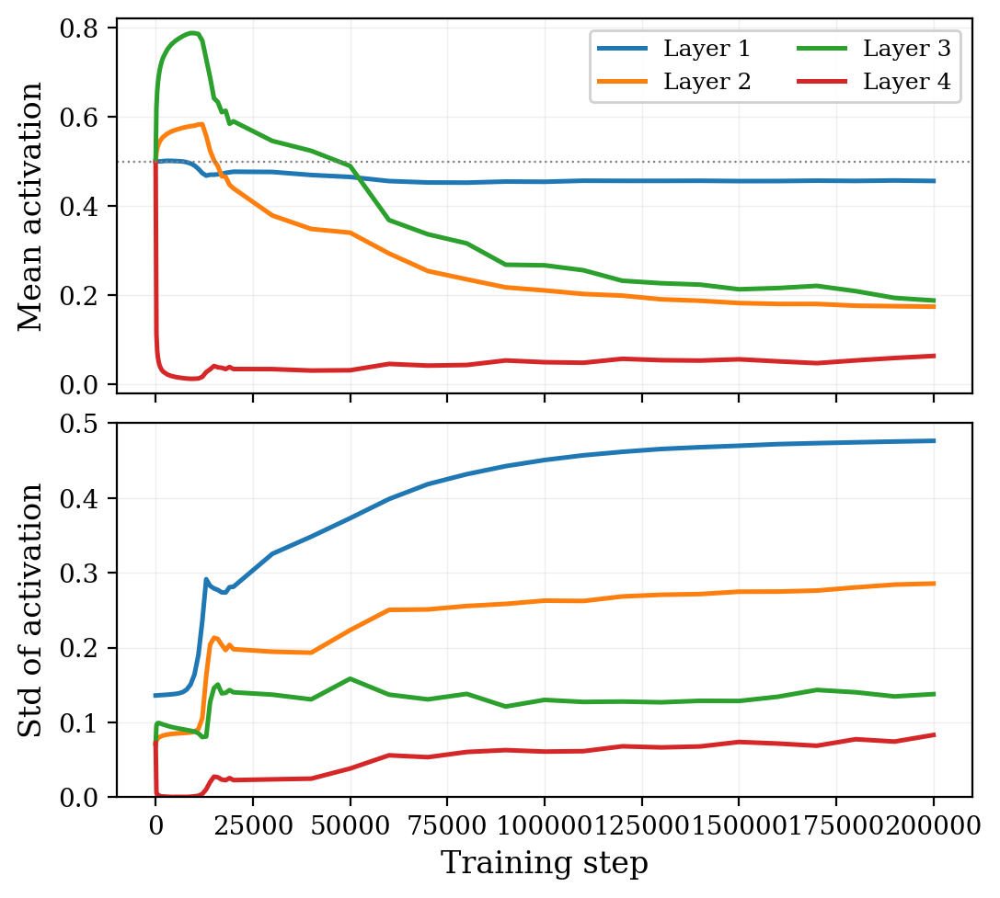
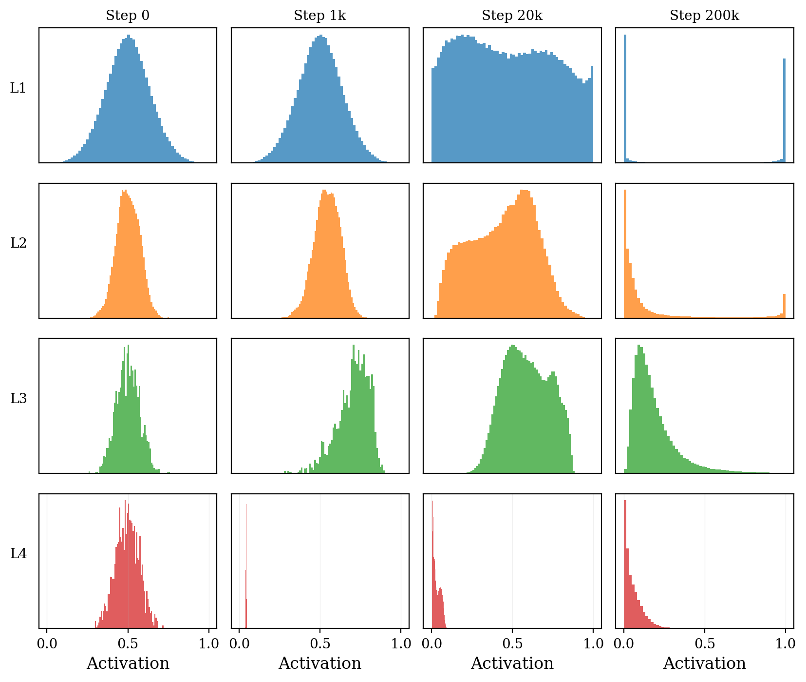
图1和图2可以看出，如果选用 Sigmoid 激活函数, 几次优化后训练值就降降至较低的水平, 与文中结论一致.
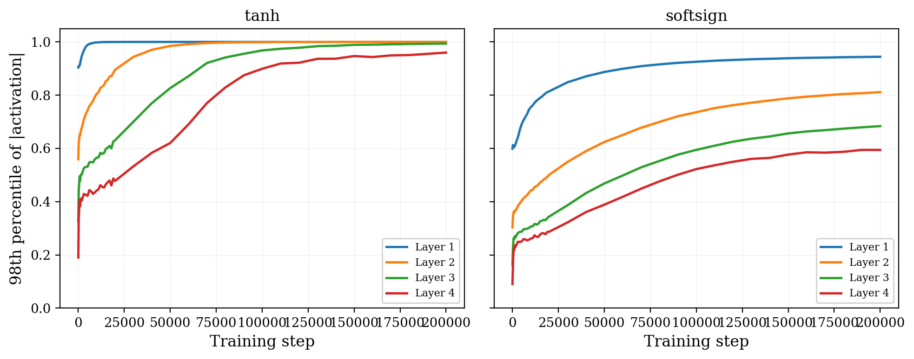
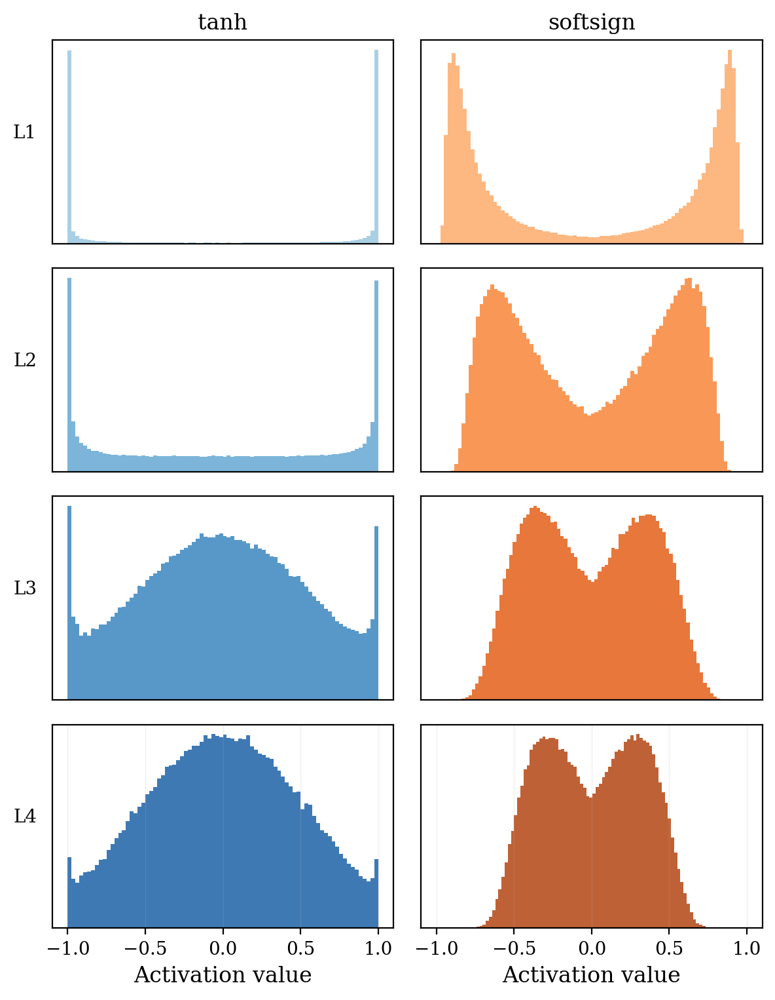
sigmoid 网络最后一层激活值迅速被推向 0 进入饱和, 其余各层均值高于 0.5 且从输出向输入递减; tanh 网络出现逐层顺序饱和; softsign 各层则同步变化, 训练结束时分布众数集中在拐点附近而非极值处。标准初始化的前向方差按 $(1/3)^l$ 衰减, Xavier 初始化则显著更稳定.
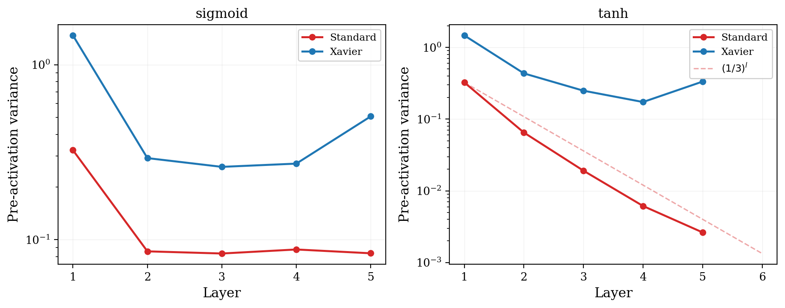
为了能使深度神经网络在前向传播和反向传播过程中, 激活值的方差维持稳定, Xavier 进行了一系列推导. 具体而言, 为简化计算, 给出假设 $g(z) \approx z$ 下，$h^{(l)} \approx z^{(l)}$。对单个输出分量：
$$z^{(l)}_j = \sum_{i=1}^{n_l} W^{(l)}_{ji} h^{(l-1)}_i$$
由 $E[W] = 0$、$W$ 与 $h$ 独立，以及在对称性激活函数下有 $E[h] = 0$，得：
\begin{equation} \text{Var}[z^{(l)}] = n_l \cdot \text{Var}[W^{(l)}] \cdot \text{Var}[h^{(l-1)}] \end{equation}
由线性近似 $\text{Var}[h^{(l)}] = \text{Var}[z^{(l)}]$，递推展开：
\begin{equation} \text{Var}[h^{(L)}] = \text{Var}[h^{(0)}] \prod_{l=1}^{L} n_l \cdot \text{Var}[W^{(l)}] \end{equation}
要求 $\text{Var}[h^{(l)}]$ 逐层不变，则每个乘法因子必须等于1：
\begin{equation} n_l \cdot \text{Var}[W^{(l)}] = 1 \quad \Longrightarrow \quad \text{Var}[W^{(l)}] = \frac{1}{n_l} \end{equation}
对于反向传播, 由链式法则和线性近似 $g'(z) \approx 1$，梯度从第 $l+1$ 层传到第 $l$ 层：
\begin{equation} \frac{\partial{L}}{\partial x} = W^T\delta \end{equation}
\begin{equation} \delta^{(l)}_k = \sum_{j=1}^{m_l} W^{(l)T}_{jk} \delta^{(l+1)}_j \end{equation}
$W^{(l)}$ 的维度是 $m_l \times n_l$，转置后对第 $k$ 个分量求和的范围是 $j = 1, \ldots, m_l$。
\begin{equation} \text{Var}[\delta^{(l)}] = m_l \cdot \text{Var}[W^{(l)}] \cdot \text{Var}[\delta^{(l+1)}] \end{equation}
\begin{equation} \text{Var}[\delta^{(1)}] = \text{Var}[\delta^{(L)}] \prod_{l=1}^{L} m_l \cdot \text{Var}[W^{(l)}] \end{equation}
要求每个乘法因子等于1：
\begin{equation} \text{Var}[W^{(l)}] = \frac{1}{m_l} \end{equation}
$(7)$ 要求 $\text{Var}[W^{(l)}] = 1/n_l$，$(12)$ 要求 $\text{Var}[W^{(l)}] = 1/m_l$. 当 $n_l \neq m_l$ 时不可同时满足. Xavier 取两者的折中, 使得方差与 fan_in 和 fan_out 的平均成反比:
\begin{equation} \text{Var}[W^{(l)}] = \frac{2}{n_l + m_l} \end{equation}
对均匀分布 $U[-a, a]$，$\text{Var} = a^2/3$，解得：
\begin{equation} W^{(l)} \sim U\left[-\frac{\sqrt{6}}{\sqrt{n_l + m_l}},\; \frac{\sqrt{6}}{\sqrt{n_l + m_l}}\right] \end{equation}
但我后来在阅读 Kaiming 初始化论文时发现, 由于 $m_l = n_{l+1}$, 故只采用正向传播所得的 $\text{Var}[W^{(l)}] = \frac{1}{n_l}$ 或反向传播的结果, 最终激活值与反向梯度的变化仅相差一个常数 $n_N / n_0$.
相比之下, 标准初始化 $W \sim U[-1/\sqrt{n}, 1/\sqrt{n}]$ 的方差为 $1/(3n)$，所以每层乘法因子 $n \cdot \text{Var}[W] = 1/3$.
$L$ 层后方差衰减为 $(1/3)^L$, 极易出现梯度消失.
Kaiming 初始化
Kaiming 初始化 [3] 同样关注不同的激活函数和初始化方法对于深度神经网络训练稳定性的研究. 文章的背景是以 ReLU 为代表的"整流器"激活函数得到广泛应用, 而 Xavier 初始化在 ReLU 上表现不佳的问题. 从前面的推导不难得到, Xavier 初始化推导中的关键假设是 $E[h] = 0$, 故 $E[h^2] = \text{Var}(h)$, 推导中所有 $E[h^2]$ 都可以直接换写成 $\text{Var}(h)$, 得到
$$\text{Var}[z^{(l)}] = n_l \cdot \text{Var}[W^{(l)}] \cdot \text{Var}[h^{(l-1)}] $$
然而 $ReLU(x) = max(0, x)$ 在 $x$ 关于 0 对称时, 输出非负且均值大于零, $E[h] \neq 0$, 因此 $E[h^2] \neq \text{Var}(h)$. 但我们可以回退一步推导, 仍沿用 Xavier 的假设, 可以发现 $E[W^{(l)}_{ji} h^{(l-1)}_i]$ 为零, $W$ 和 $h$ 的独立性仍然保持, 因此
\begin{equation} \text{Var}[W^{(l)}_{ji} h^{(l-1)}_i] = E[W^{(l)2}_{ji}] E[h^{(l-1)2}_i] = \text{Var}[W^{(l)}] \cdot E[h^{(l-1)2}_i] \end{equation}
只需计算 $E[h^{(l-1)2}_i] = E[\text{ReLU}(z^{(l-1)})^2]$. 由 $z^{(l-1)}$ 关于 0 对称,
\begin{equation} E[\text{ReLU}(z^{(l-1)})^2] = \frac{1}{2} E[(z^{(l-1)})^2] = \frac{1}{2} \text{Var}[z^{(l-1)}] \end{equation}
(最后一步用了 $E[z^{(l-1)}] = 0$). 代回得
\begin{equation} \text{Var}[W^{(l)}_{ji} h^{(l-1)}_i] = \text{Var}[W^{(l)}] \cdot \frac{1}{2} \cdot \text{Var}[z^{(l-1)}] \end{equation}
化成递推式的结果如下:
$$\text{Var}[z^{(L)}] = \text{Var}[z^{(1)}] \prod_{l=2}^{L} \frac{1}{2} n_l \cdot \text{Var}[W^{(l)}] $$
因此可以得到逐层方差的等式
$$\frac{1}{2} n_l \cdot \text{Var}[W^{(l)}] = 1 \quad \Longrightarrow \quad \text{Var}[W^{(l)}] = \frac{2}{n_l} $$
反向传播同理
$$\frac{1}{2} m_l \cdot \text{Var}[W^{(l)}] = 1 \quad \Longrightarrow \quad \text{Var}[W^{(l)}] = \frac{2}{m_l} $$
和前文一样, 我们在正向传播和反向传播任选一种实现即可, 對最終梯度或激活值僅有常數比例的影響.
我在 CIFAR-10 上使用 CNN 复现了 Xavier 与 Kaiming 在不同深度 ReLU 网络上的对比, 结果如下。
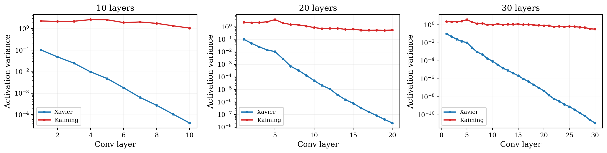
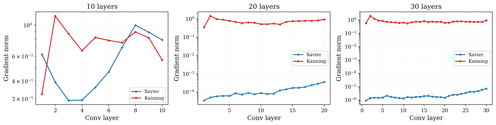
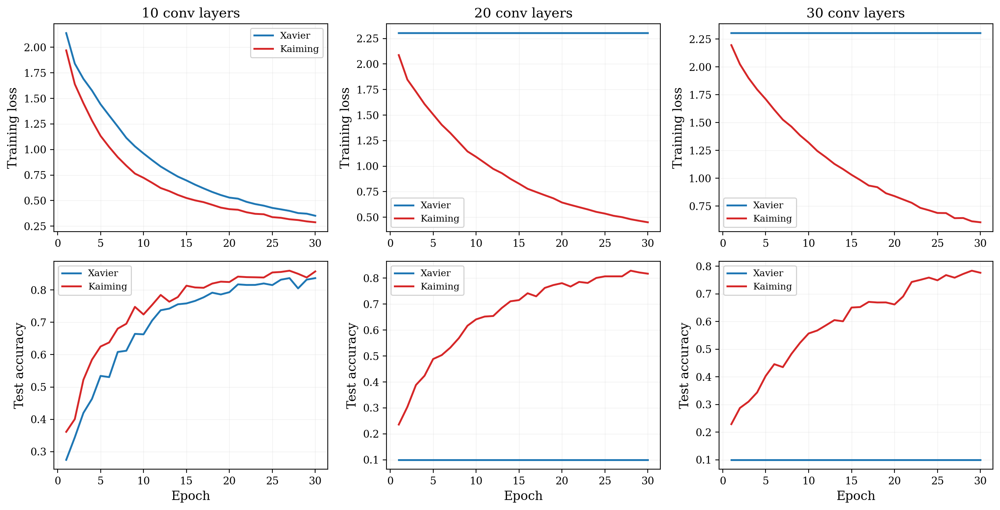
网络层数在 10 层时两者均能收敛, 其中 Kaiming 初始化设置下训练速度更快; 当网络层数增长至 20 层及以上时, Xavier 完全停滞在随机猜测水平, 而 Kaiming 仍能正常训练. 从方差传播图中分析, Xavier 的激活值方差按 $(1/2)^l$ 指数衰减, 30 层后衰减到 $10^{-10}$, 因此出现了显著的梯度消失现象; Kaiming 则维持在 $O(1)$ 附近, 持续得到恰当的奖励信号.
由于方差是逐层传递的, 因此我进行了更进一步的实验, 追踪 20 层网络训练过程中各层方差的演化. 可以看出, 逐层的方差具有良好的对数线性性质, 与前述递推公式吻合. 而这种性质在后续训练中仍然得到了保持.
$$\text{Var}[z^{(L)}] = \text{Var}[z^{(1)}] \prod_{l=2}^{L} \frac{1}{2} n_l \cdot \text{Var}[W^{(l)}]= \text{Var}[z^{(1)}] \frac{1}{2^{L-1}}$$
Xavier 在初始化时底层方差较小, 在训练中持续衰减, 19 epoch 后已降到 $10^{-15}$, Kaiming 则始终维持在 $O(1)$ 量级.
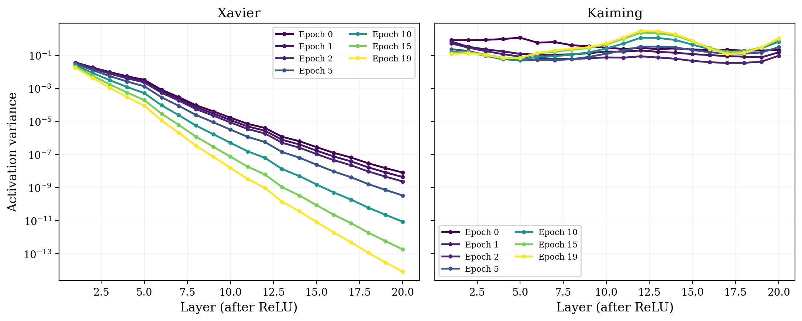
正交初始化
Saxe 等人 [4] 考察的对象是深层线性网络
\begin{equation} y = W^{(L)} W^{(L-1)} \cdots W^{(1)} x \end{equation}
scaled Gaussian 初始化 (各层 $W^{(l)}_{ij} \sim N(0, 1/n)$) 保证
\begin{equation} \mathbb{E}_W [\|W h\|^2] = \|h\|^2 \end{equation}
即一阶矩意义下的范数守恒. 然而 $W$ 是随机矩阵, 其奇异值服从一个分布. 单个高斯矩阵 ($n\times n$, 元素 iid $\sim N(0, 1/n)$) 的奇异值平方分布服从 Marchenko-Pastur 分布 [6], 这是课程未涉及的随机矩阵理论结果. 给定 $m \times n$ 矩阵 $W$ 的特征值 $\lambda_1, \ldots, \lambda_m$, 其经验特征值分布定义为
\begin{equation} \mu_m(A) = \frac{1}{m} \sum_{i=1}^m \mathbf{1}_{\lambda_i \in A} \end{equation}
即把所有特征值视为等权重的离散概率分布. Marchenko-Pastur 定律指出, 当 $m, n \to \infty$, $n/m \to \gamma$ 时, $WW^T$ 的经验特征值分布几乎必然收敛到
\begin{equation} f(\lambda) = \frac{1}{2\pi\gamma\lambda}\sqrt{(\lambda_+ - \lambda)(\lambda - \lambda_-)} \cdot \mathbf{1}_{[\lambda_-, \lambda_+]}, \quad \lambda_\pm = (1\pm\sqrt\gamma)^2 \end{equation}
在 $\gamma = 1$ 时, 支撑为 $[0, 4]$, 密度在 $\lambda \to 0$ 处发散. 这意味着单个矩阵就已经有非平凡的谱展宽.
$L$ 个高斯矩阵相乘后, 端到端 Jacobian $W_{\text{Tot}} = \prod_l W^{(l)}$ 的奇异值分布被论文描述为 highly kurtotic: 大部分趋于 0, 少数偏大. 由此论文给出动态等距条件: 要求 $W_{\text{Tot}}$ 的所有奇异值都接近 1.
正交初始化令 $W^{(l)}$ 为随机正交矩阵, 此时所有奇异值恒等于 1. 正交矩阵的乘积仍为正交矩阵, 故任意深度 $L$ 下 $W_{\text{Tot}}$ 均满足动态等距. 论文证明: 在正交初始化条件下, 深层线性网络的学习时间不依赖于深度. 对比之下, scaled Gaussian 初始化的学习时间随深度增长 (论文 Fig. 6A).
实验上取 $W \in \mathbb{R}^{1000 \times 1000}$, 对比高斯和正交初始化在单矩阵以及 $L = 10$ 矩阵乘积下的奇异值分布. 高斯单矩阵的特征值分布吻合 MP 理论曲线; $L = 10$ 乘积后跨越约 35 个数量级 ($10^{-34}$ 到 $10^1$). 正交矩阵的奇异值始终为 1.
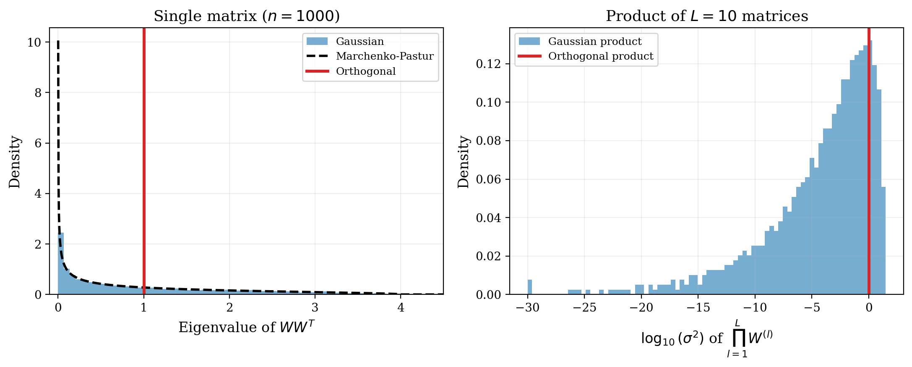
muP 初始化
Yang 等人 [5] 将 $L$ 层 MLP 的所有自由度归约为三组指数 $(a_l, b_l, c)$:
\begin{equation} W^l = n^{-a_l} w^l, \quad w^l_{\alpha\beta} \sim N(0, n^{-2b_l}), \quad \text{lr} = \eta n^{-c} \end{equation}
Xavier/Kaiming 对应的标准参数化 SP 在表格中写为 $a_l = 0$ (全部层), $b_1 = 0$, $b_l = 1/2 \, (l \geq 2)$. SP 在 $c = 0$ 时不稳定 (一步 SGD 后输出发散), 论文证明 SP 至少需要 $c = 1$ 才稳定, 即学习率必须缩到 $O(1/n)$.
作者希望研究学习率的选择, 目标是 $\Delta f \sim O(1)$, 从而使得 $f$ 在 $n \rightarrow \infty$ 时不会训练崩溃分析。
研究一个具有两个隐藏层的线性网络
\begin{equation} f = VWU\xi \end{equation}
表示中间激活值
\begin{equation} \bar h = W h, h = U \xi \end{equation}
其中 $U \in \mathbb{R}^{n\times d}$, $W \in \mathbb{R}^{n\times n}$, $V \in \mathbb{R}^{1\times n}$.
标准参数初始化下 $U_{\alpha\beta} \sim N(0, 1)$, $W_{\alpha\beta}, V_{\alpha\beta} \sim N(0, 1/n)$. 为了简化推导, 仅在 $W$ 上做一步 SGD, 学习率 $n^{-c}$. 推导偏导数公式：
\begin{equation} \frac{\partial L}{\partial \bar{h}} = V^T\frac{\partial L}{\partial f} \end{equation}
\begin{equation} \frac{\partial L}{\partial W} = V^T\frac{\partial L}{\partial f} h^T \end{equation}
因此得到 $W$, 得到一次更新后激活值的变化：
\begin{equation} W_1=W-\eta\frac{\partial L}{\partial W} \end{equation}
\begin{equation} f_1 = f - n^{-c} \cdot V V^T \frac{\partial L}{\partial f} h^T h = f - n^{-c} \frac{\partial L}{\partial f}\cdot V V^T h^T h \end{equation}
考察右边两个求和:
\begin{equation} V V^T = \sum_{\alpha=1}^n V_\alpha^2, \quad h^T h = \sum_{\alpha=1}^n h_\alpha^2 \end{equation}
注意除了维数 $n$, $d$ 和 $1$ 是不变的. $V_\alpha \sim N(0, 1/n)$, 因此 $E[V_\alpha^2] = 1/n$, $\sum_{\alpha=1}^n V_\alpha^2 \to n \cdot 1/n = \Theta(1)$.
类似的, $h_\alpha = (U\xi)_\alpha \sim \Theta(1)$, $E[h_\alpha^2] = \Theta(1)$. 因此 $\sum_\alpha h_\alpha^2 \rightarrow \Theta(n)$.
于是二者相乘, $V V^T h^T h = \Theta(n)$. 代入可得, $f_1 - f \rightarrow \Theta(n^{1-c})$.
研究目标希望 $|f_1 - f| \sim O(1)$, 因此 $c \geq 1$, 即学习率必须缩到 $O(1/n)$.
学习率设置为 $O(1/n)$ 之后, 研究一步更新对中间激活 $\bar h$ 的影响. 从 $\bar h_1 - \bar h = (W_1 - W) h = -n^{-c} \chi V^T h^T h$, 代入 $h^T h = \Theta(n)$ 与 $c = 1$:
$$\bar h_1 - \bar h = - n^{-1} \chi \cdot \Theta(n) \cdot V^T = \Theta(1) \cdot V^T.$$
但 $V$ 的元素本身是 $\Theta(1/\sqrt n)$ 量级 ($V_{\alpha\beta} \sim N(0, 1/n)$), 所以 $\bar h_1 - \bar h$ 的每个 item 的变化只有 $\Theta(1/\sqrt n)$:
$$(\bar h_1 - \bar h)_\alpha = \Theta(n^{-1/2}) \to 0 \quad \text{当 } n \to \infty.$$
即在无穷宽极限下, 中间层的激活值经过一步训练几乎不变. 网络没有学习到任何新特征——论文将此称为核机制 (kernel regime).
标准参数化方法所面临的困难在于, 为了稳定输出 $f$, 需要将学习率设置为 $O(1/n)$ 的水平; 但这又使中间层特征更新趋零.
muP 的修正: 在标准参数化基础上, 將输出层乘子改为 $a_{L+1} = 1/2$, 输入层乘子改为 $a_1 = -1/2$, 学习率取 $c = 0$. 此时每层权重满足最大更新条件 $\Delta W^l x^{l-1} = \Theta(1)$, 同时输出 $f_t$ 保持 $\Theta(1)$.
论文证明 muP 是所有稳定 abc-参数化中唯一同时满足"每层最大更新"且"输出层最大初始化且最大更新"的方案.
muP 在 $n \to \infty$ 时存在良好定义的特征学习极限. 最优超参数 (尤其是学习率) 在不同宽度下保持稳定, 因此在小模型上完成的超参数搜索可直接迁移到更大宽度的模型, 即 muTransfer.
我做了三组实验来验证上面的推导. 实验基于 CIFAR-10 上的 MLP 进行.
第一组实验测量一步 SGD 后输出 $|f_1 - f_0|$ 随宽度 $n$ 的变化. 构造两隐层线性网络 $f = V W U \xi$. 三种配置分别为: (SP(标准初始化), lr=1), (SP, lr=$1/n$), (muP, lr=1). 网络宽度范围 [32, 4096], 每次实验运行 20 个随机种子取均值.
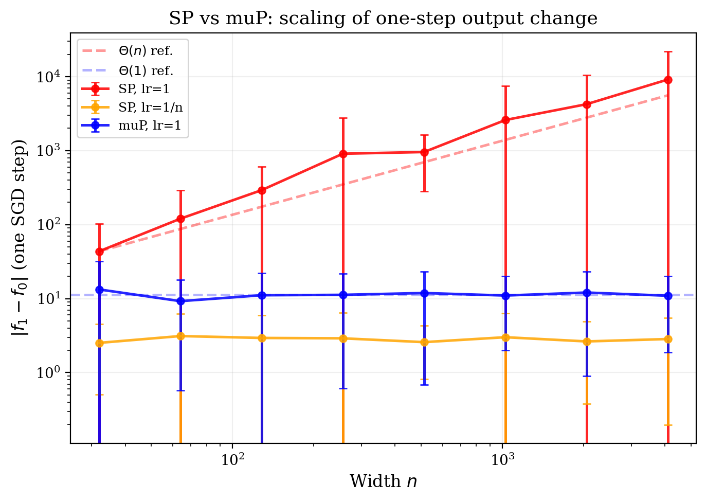
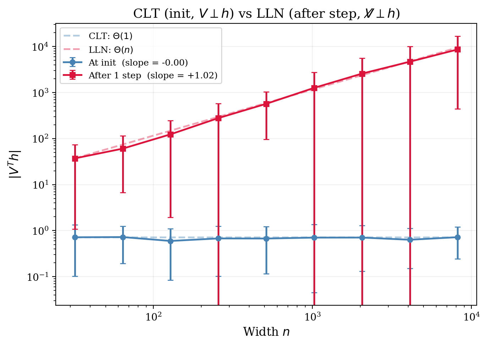
SP + lr=1 的曲线 (红色) 在 log-log 图上贴合 $\Theta(n)$ 参考线, 从 $n=32$ 时的 $\sim 40$ 涨到 $n=4096$ 时的 $\sim 10^4$; muP + lr=1 的更新步长 (蓝色) 始终维持在 $\Theta(1)$ 量级 ($\sim 10$); SP + lr=$1/n$ (橙色) 通过把学习率减小到 $O(1/n)$ 控制更新步长.
第二组实验对比 $V^T h$ 在两种统计结构下的标度律. 取上述两隐藏层线性网络 $f = V W U \xi$, 其中 $h = W U \xi$ 为中间隐藏层激活. 测量标量 $|V^T h|$ 在两个时刻的取值: (a) 初始化时, 此时 $V$ 与 $h$ 由独立随机初始化生成, 二者独立, $V_\alpha h_\alpha$ 为零均值独立项; (b) 一步 SGD 之后, $V_\alpha h_\alpha$ 不再是独立零均值项. 宽度 $n$ 取 $\{32, 64, 128, 256, 512, 1024, 2048, 4096, 8192\}$, 每个宽度独立抽取 50 个随机种子取均值. 在 log-log 坐标下对 $|V^T h|$ 关于 $n$ 拟合, 比较其斜率与理论预测.
初始化时 $V_\alpha h_\alpha$ 独立零均值, 由中心极限定理 $\sum_{\alpha=1}^n V_\alpha h_\alpha = \Theta(1)$, 在 log-log 坐标下斜率为 0; 一步 SGD 之后 $V_\alpha h_\alpha$ 含非零均值交叉项, 斜率为 1. 实测斜率分别为 $-0.00$ 与 $+1.02$, 与理论预测一致. 同一求和量在两个时刻的标度从 $\Theta(1)$ 跃升至 $\Theta(n)$: 当 $n = 32$ 时两条曲线的取值之比约为 50, $n = 8192$ 时之比超过 $10^4$. 这一实验表明, SP 采用统一的 $1/\sqrt n$ 缩放, 无法同时控制 CLT 形式与 LLN 形式两类求和.
第三组实验验证 muTransfer. 在 CIFAR-10 上训练 4 隐藏层的 MLP, 选择 ReLU 作为激活函数, Adam 作为优化器, 对每个宽度 $n \in \{64, 128, 256, 512, 1024, 2048\}$ 遍历学习率 $\eta \in [10^{-5}, 10^{-1}]$, 训练 2 epoch, 记录验证集准确率.
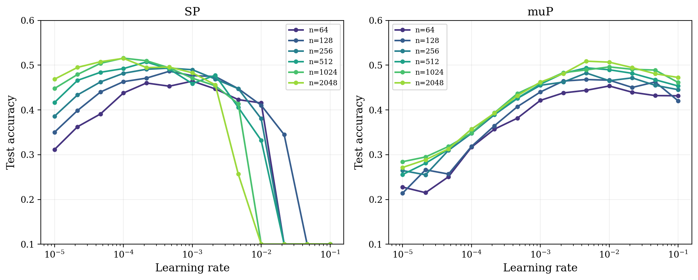
SP 子图中, 各宽度的曲线最优点明显向左漂移: $n=64$ 时最优 $\eta = 10^{-3}$, $n=2048$ 时最优 $\eta = 10^{-4}$, 漂移约 10 倍, 与论文预测的 $\eta_\text{opt} \propto 1/n$ 一致. muP 子图中, 各宽度的曲线最优点对齐在 $\eta \approx 5 \times 10^{-3}$ 附近, 跨越 32 倍宽度仅有约 2 倍浮动. 这正是 muTransfer 的实际效果: 在小模型上找到的学习率可以直接用在更大宽度的模型上.
讨论
本次作业的选题源于我在《人工智能导论》的一次训练神经网络进行情感分析的编程作业。借此机会，我对于 Xavier、Kaiming、正交初始化和 muP 这四种深度神经网络参数初始化的方法有了全新的认识。也理解了类似工作的目标与流程: 定义一个优化目标, 如"输出方差稳定"、"反向传播梯度方差稳定"等，并基于不同的激活函数、网络形状等假设进行理论推导。除此之外，由于神经网络本身就是一种无法通过理论推导，得到精确的参数变化规律的模型，因此进行严谨的训练实验是检验理论有效性的重要途径。
对于 Xavier、Kaiming 和 muP，我读懂了其中绝大多数公式。正交初始化这篇论文涉及的数学难度更高，在推导完 SVD 部分后，后续的二维动力学、随机矩阵的部分便开摆了💤
在前两者的方差稳定性基础上，正交初始化告诉我们，从奇异值的视角看，还需要保证各个奇异值维持在稳定的量级。而在 GPT-2 之后的工业化大模型时代，muP 这篇工作通过改变输出层和输入层的缩放比例，满足了"每层最大更新"且"输出层最大初始化且最大更新"两个条件，规避了反复调试学习率的痛苦。
将概率论的知识应用到深度神经网络的研究中, 仍然有很大的局限性. 神经网络和数据的复杂性使得理论推导往往需要大量简化假设. 受限于深度神经网络作为一个庞大系统的混沌性, 数学理论的推导无法预测其精确的走向. 因此代码实验对于深度神经网络的研究是具有不可替代的作用的.
在完成本次作业的过程中，深深感觉到这些工作的扎实。相信扎实的数学基础对于人工智能的研究还是有不可替代的价值的：）